<ion-header>
  <ion-toolbar color="dark">

    <ion-icon (click)="Home()" slot="start" name="arrow-back" class="iconeconf"></ion-icon>

    <div class="div">
      <ion-row class="row">
        <ion-col size="2">
          
        </ion-col>
        <ion-col size="7">
          
        </ion-col>
      </ion-row>
    </div>

    <ion-buttons slot="end">
      <ion-menu-button></ion-menu-button>
    </ion-buttons>

  </ion-toolbar>
</ion-header>
<ion-content>
  <ion-toolbar color="success">
    <ion-title>Nutricionistas</ion-title>
  </ion-toolbar>

  <ion-item *ngFor="let nutricionista of listaDeNutricionistas">
    <ion-thumbnail slot="start" (click)="perfilNutri(nutricionista)">
      
    </ion-thumbnail>
    <ion-label (click)="Chat(nutricionista)">
      <ion-title>{{nutricionista?.nome}}</ion-title>
    </ion-label>
  </ion-item>

</ion-content>